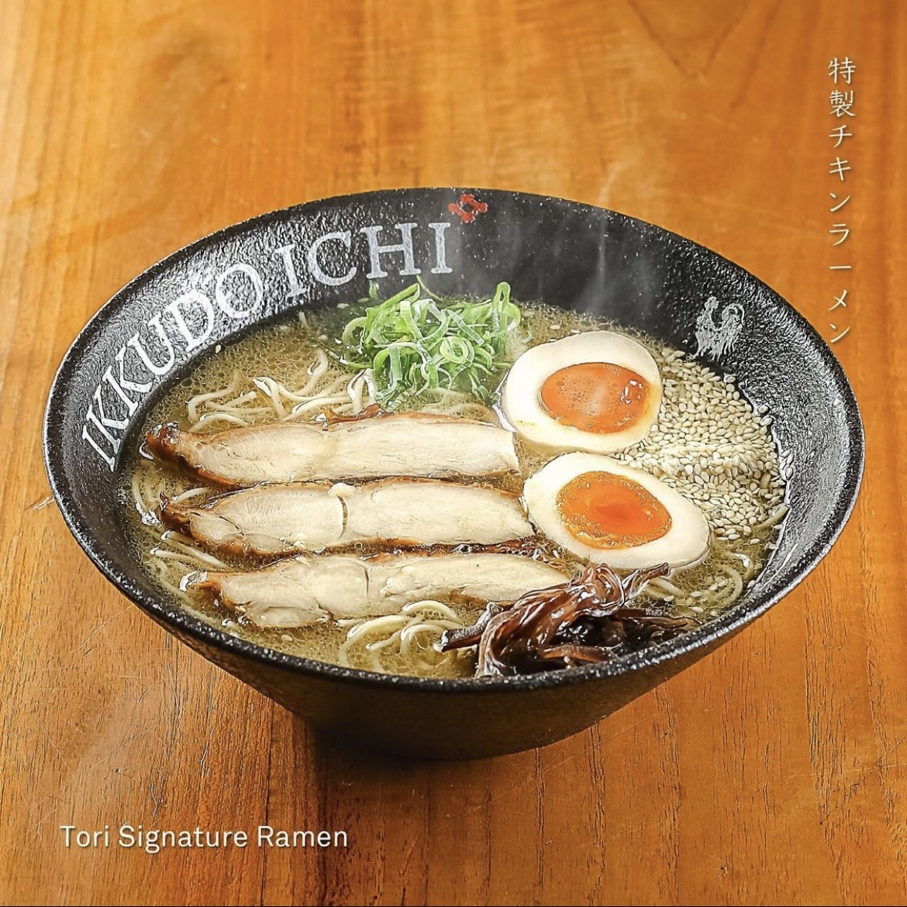
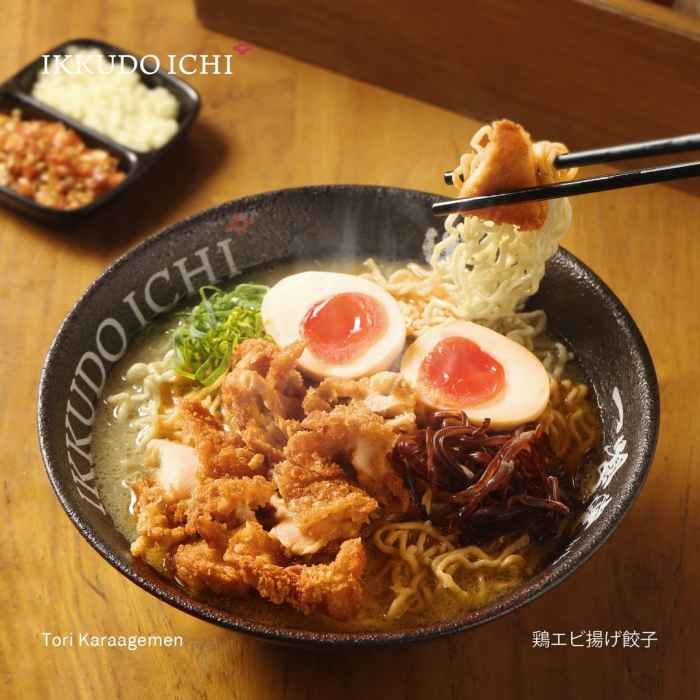
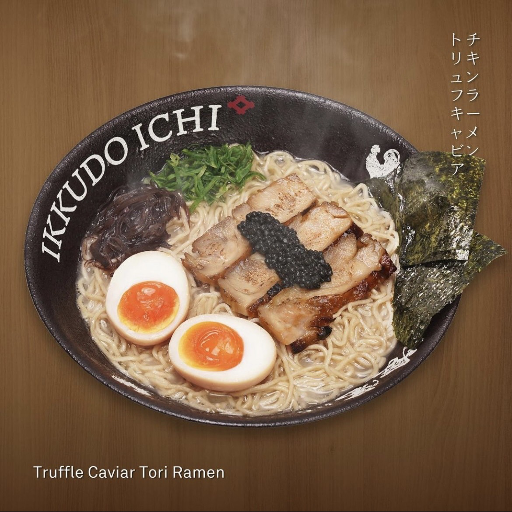

| No. | Food/Drink | Price | Description |
|---|---|---|---|
| 1. |

Tori Signature Ramen |
Rp. 60.000 | Our first menu recommendation at Ikkudo Ichi is Tori Signature Ramen! As the name suggests, Tori Signature Ramen is their signature dish which also sells well. This menu is suitable for everyone, both beginners and ramen connoisseurs. Tori Signature Ramen comes with customizable Ikkudo Ichi ramen noodles, served with delicious chicken broth, chicken chasu, kikurage, hard-boiled egg for extra protein, and scallions. For those of you who don't like spicy food, this dish will give you satisfaction because of its savory taste! We recommend this menu, especially for those who are eating at Ikkudo Ichi for the first time. You'll definitely come back to try their other menu items! |
| 2. |

Tori Karaagemen |
Rp. 71.500 |
Tori Karaagemen comes with karaage meat on top of ramen with delicious chicken sauce. You will enjoy this menu along with kikurage, boiled eggs and chopped green onions. All portions of ramen at Ikkudo Ichi are served just right. You will feel full with just one portion, or it can even make you addicted because it tastes delicious and delicious! |
| 3. |

Truffle Caviar Tori Ramen |
Rp. 121.000 |
Lastly on our food menu recommendation at Ikkudo Ichi is Truffle Caviar Tori Ramen! If you've just received your paycheck at the start of the month, this is the perfect dinner menu to pamper yourself. This dish is one of the newest menus at Ikkudo Ichi. With chicken ramen like many other dishes, this menu is unique for their “umami” truffle soup. “Umami” means delicious essence in Japanese, and its taste is similar to the savoriness of meat. As for the taste, you don't need to worry; this dish is as delicious as it looks! They also serve caviar in addition to chicken chasu, kikurage, boiled eggs and green onions. Yum! |
| 4. |
Ocha |
Rp. 10.000 | Who don't know ocha? Ocha is a wonderful Japanese tea experience! Usually made from high quality green tea leaves such as sencha or matcha, this tea offers a fresh and bright taste, grassy and slightly sweet with a refreshing hint of bitterness! Whether served hot to soothe the soul or cold to energize on a hot day, ocha is packed with antioxidants and health benefits. It's not just a drink - it's a ritual, a moment of calm and a burst of pure, natural goodness! Ocha is perfect to pair with Japanese dishes or during traditional tea ceremonies, a must try! |
| 5. |

Ice Milo |
Rp. 15.000 | Ice Milo is a refreshing chocolate malt drink, made by mixing Milo powder with cold milk or water, sweetened to taste, and served over ice! It has a rich, chocolaty flavor with a slightly malty undertone, offering a smooth and creamy texture! Often topped with an extra sprinkle of Milo powder for a more intense taste, it's the perfect beverage to cool off on a hot day! |